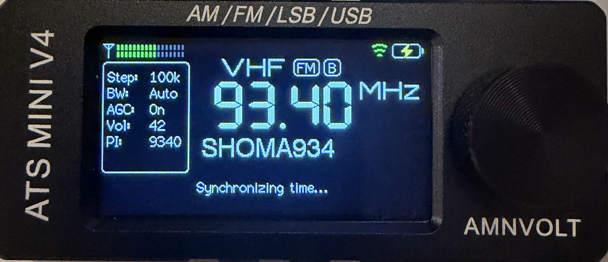

CW mode
The display shows the CW signal's own frequency. Narrow 0.5 kHz filter with the tone in its centre, and 10 Hz steps.
ATS Mini firmware · v2.45-r2 · 8 November 2026
RESONIK is free, open-source firmware for the ATS Mini pocket receiver (ESP32-S3 + SI4732). It keeps everything the official ats-mini firmware does and adds CW, a Region 1 band plan, a dual clock, a beacon tracker, a new menu and more.
Free firmware update for the ATS Mini V3, V4 and V4B (ESP32-S3 + SI4732), with a one-click browser installer.

Straight from this page, over USB. No software to install, and your settings, memories and Wi-Fi networks are kept.
usbmodem…; not the "debug" one). When asked whether to erase the device, leave it unticked — that keeps your settings — then Install. It takes about a minute.For example the AMNVOLT ATS Mini V4. Variant ospi.
Radios built with the quad-SPI ESP32-S3 module. Variant qspi.
Installed from this page 0 times · downloaded from GitHub 0 times
resonik-ats-mini-v2.45-r2-ospi.zip (or -qspi) from GitHub and flash ats-mini.ino.bootloader.bin at 0x0, ats-mini.ino.partitions.bin at 0x8000, boot_app0.bin at 0xe000 and ats-mini.ino.bin at 0x10000.The display shows the CW signal's own frequency. Narrow 0.5 kHz filter with the tone in its centre, and 10 Hz steps.
The IARU Region 1 plan drawn under the tuning scale for 160–10 m: CW, digital, beacons and SSB. Tuning into a phone segment selects LSB or USB for you.
Local time and UTC, with named time zones and summer time handled automatically. The default is UTC.
With Wi-Fi set to Sync, the time is set at every power-on — even on networks that block internet time servers.
The voltage alternates with an estimate in hours, learned from your own radio's consumption.
On AM, very strong stations no longer overload the receiver: attenuation is added and removed as needed.
Six categories of large coloured tiles with icons: Tuning, Audio, Memory, Ham & SWL, Display and System. Settings open full screen. The classic list is still there. r2
Names the NCDXF/IARU beacon on the air on 14100–28200 kHz, or follows one beacon across the five bands to see which paths are open. r2
Steps through your memories and stops on signals; logs frequency, signal and station to a CSV file you download from the radio's web page. r2
Solar flux, sunspots, A and K index and HF band conditions from hamqsl.com, fetched over Wi-Fi. r2
Kenwood TS-480 commands over USB, for flrig, Hamlib, WSJT-X (receive), fldigi and logging programs. r2
The season's schedule with days of the week, language and target area, so you only see stations that are on today. r2
All bands, modes, memories, RDS, Wi-Fi and Bluetooth of ats-mini 2.45.

RESONIK فریموری رایگان و متنباز برای رادیوی جیبی ATS Mini است، بر پایهٔ فریمور رسمی ats-mini 2.45، با حالت CW، نقشهٔ باند IARU منطقهٔ ۱ و انتخاب خودکار LSB/USB، ساعت دوگانهٔ UTC و محلی، نمایش زمان باقیماندهٔ باتری، تضعیف خودکار؛ و از نسخهٔ R2: منوی جدید با شش دسته، ردیاب بیکنهای NCDXF/IARU، اسکن حافظهها، ثبت سیگنال، شرایط انتشار امواج، کنترل CAT و برنامهٔ ایستگاههای EiBi همراه با روزهای پخش.
بهروزرسانی رایگان فریمور رادیو ATS Mini مدلهای V3، V4 و V4B، با نصب مستقیم از مرورگر.
دانلود راهنمای کاربری فارسی (PDF) نقشهی راه نسخهها (PDF)
پیش از نصب از رادیو نسخهٔ پشتیبان بگیرید. نسخههای بعدی را میتوان از راه وایفای نصب کرد: Menu → System → Update FW. در نسخهٔ R1 این گزینه در Settings → Update FW است.